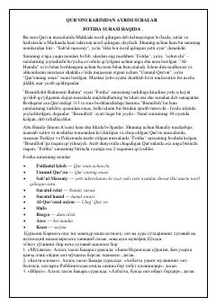

SKQur'oni Karimning ayrim suralari va ularning tafsiri haqida o'quv qo'llanma.
Ushbu kitobda Qur'oni Karimning ayrim suralari, jumladan Fotiha surasi va uning tafsiri, oyat hamda suralarning lug'aviy va istilohiy ma'nolari haqida batafsil ma'lumot beriladi. Shuningdek, suralarning nozil bo'lish tarixi va ularning fazilatlari oddiy va tushunarli tilda bayon etilgan.